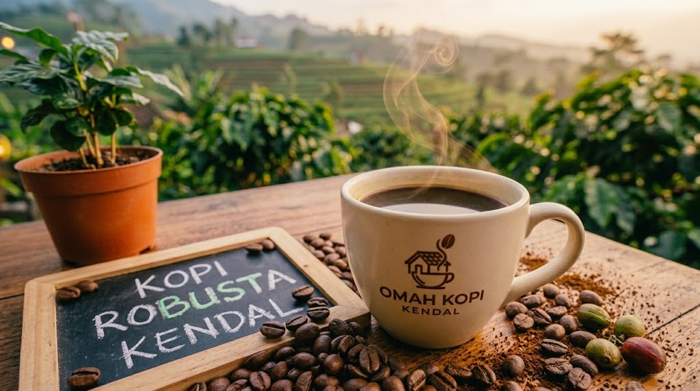
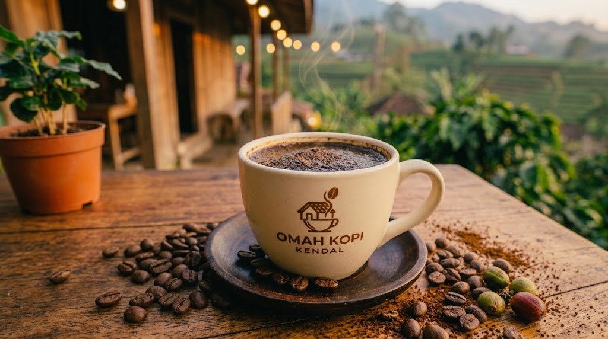
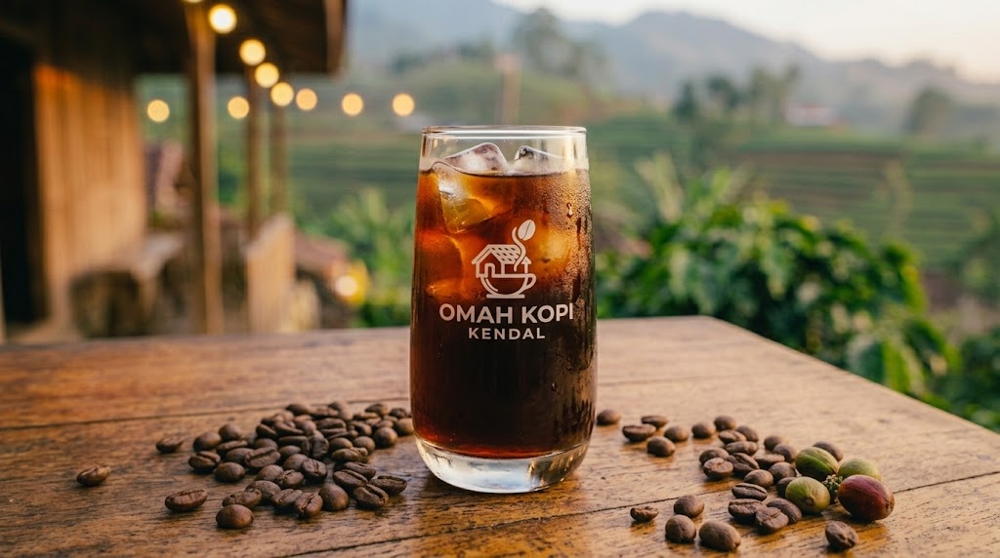
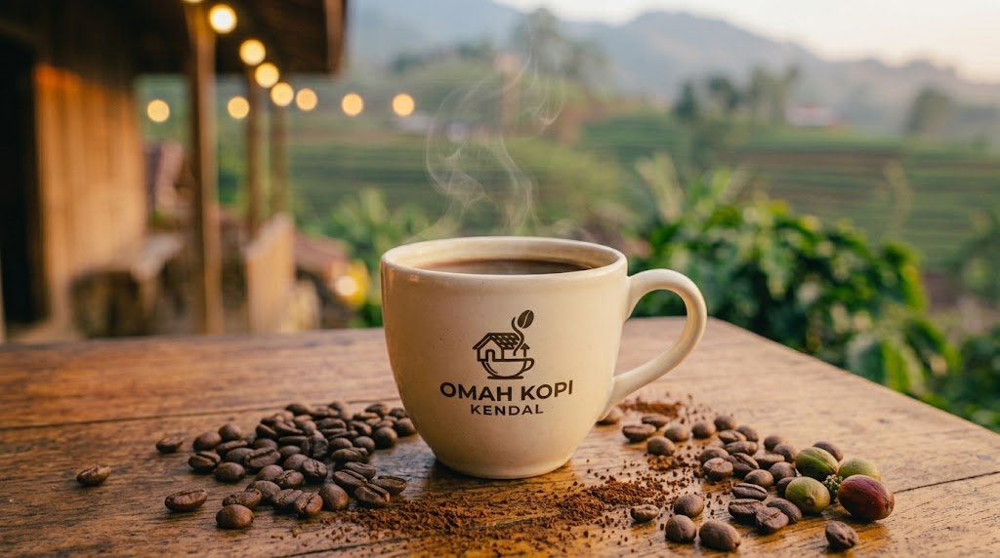
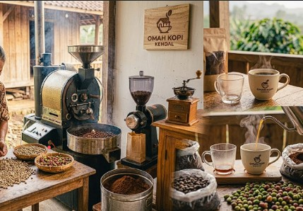
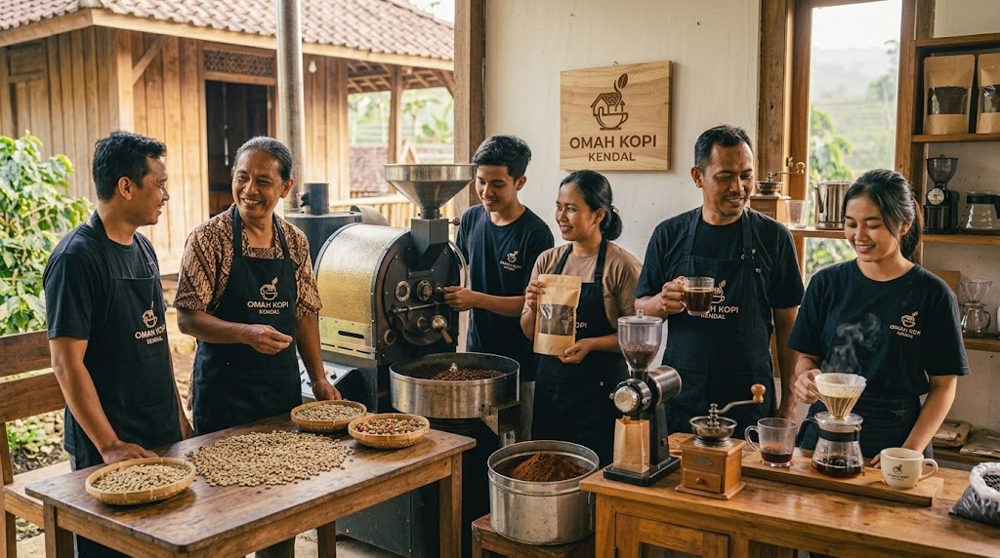

Galeri Omah Kopi Kendal
Galeri ini menampilkan produk dan aktivitas Omah Kopi Kendal.






Lagu Omah Kopi Kendal
Dengarkan lagu Omah Kopi Kendal.
Galeri ini menampilkan produk dan aktivitas Omah Kopi Kendal.






Dengarkan lagu Omah Kopi Kendal.